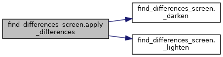

|
Robot Asistente para estimulación cognitiva de personas mayores v1.0
Sistema asistente con visión, voz e interfaz de usuario
|
Classes | |
| class | Difference |
| Estructura de control que define una diferencia inyectada entre los dos lienzos. More... | |
| class | FindDifferencesScreen |
| Pantalla del juego encargada de gestionar el ciclo de vida, la lógica y el renderizado. More... | |
| class | SceneObject |
| Entidad abstracta que representa una primitiva geométrica dibujable dentro de los lienzos. More... | |
Functions | |
| def | _darken (color, factor=0.7) |
| Atenúa u oscurece un color RGB aplicando un factor multiplicativo de escala. More... | |
| def | _lighten (color, factor=1.3) |
| Intensifica o aclara un color RGB aplicando un factor multiplicativo de escala. More... | |
| list | generate_scene (int n_objects, str theme_name, int canvas_w, int canvas_h) |
| Genera procedimentalmente una colección de objetos distribuidos sobre una rejilla ortogonal desordenada. More... | |
| def | apply_differences (list base_objects, int n_diffs, int canvas_w, int canvas_h, str theme_name) |
| Toma una escena base y genera una copia mutada inyectando un número determinado de diferencias lógicas. More... | |
Variables | |
| tuple | P_BG_TOP = (255, 240, 250) |
| tuple | P_BG_BOTTOM = (230, 240, 255) |
| tuple | P_TITLE = (180, 90, 180) |
| tuple | P_SUBTITLE = (140, 110, 180) |
| tuple | P_SHADOW = (210, 200, 225) |
| tuple | P_BTN_TEXT = ( 60, 40, 90) |
| tuple | P_PANEL_BG = (245, 240, 255) |
| tuple | P_PANEL_BORDER = (200, 180, 230) |
| tuple | P_BTN_BACK = (180, 200, 255) |
| tuple | P_BTN_EASY = (150, 230, 180) |
| tuple | P_BTN_MEDIUM = (255, 210, 130) |
| tuple | P_BTN_HARD = (255, 160, 160) |
| tuple | P_BTN_EXIT = (255, 170, 170) |
| tuple | P_FOUND_RING = ( 80, 200, 120) |
| tuple | P_MISS_FLASH = (220, 80, 80) |
| dictionary | DIFFICULTY |
| Diccionario de configuración de parámetros lógicos indexados por nivel de dificultad. More... | |
| dictionary | THEMES |
| Estructuras temáticas que definen los fondos, paletas de dibujo y morfologías disponibles para la escena. More... | |
|
private |
Atenúa u oscurece un color RGB aplicando un factor multiplicativo de escala.
| color | Tupla (R, G, B) original. |
| factor | Coeficiente flotante de atenuación lineal. |
(R, G, B) resultante normalizada en el rango [0, 255].
|
private |
Intensifica o aclara un color RGB aplicando un factor multiplicativo de escala.
| color | Tupla (R, G, B) original. |
| factor | Coeficiente flotante de amplificación lineal. |
(R, G, B) resultante acotada en el rango [0, 255]. | def find_differences_screen.apply_differences | ( | list | base_objects, |
| int | n_diffs, | ||
| int | canvas_w, | ||
| int | canvas_h, | ||
| str | theme_name | ||
| ) |
Toma una escena base y genera una copia mutada inyectando un número determinado de diferencias lógicas.
Selecciona de manera aleatoria objetos para alterar sus atributos de color, escala, eliminar su visibilidad o añadir nuevos componentes huérfanos sobre zonas libres del canvas.
| base_objects | Colección original de objetos que componen el lienzo primario A. |
| n_diffs | Número estricto de mutaciones a inyectar en la escena modificada B. |
| canvas_w | Ancho útil de la superficie de renderizado. |
| canvas_h | Alto útil de la superficie de renderizado. |
| theme_name | Identificador del tema gráfico para la extracción de colores de reemplazo. |
(lista_objetos_mutados, lista_de_instancias_Difference). 
| list find_differences_screen.generate_scene | ( | int | n_objects, |
| str | theme_name, | ||
| int | canvas_w, | ||
| int | canvas_h | ||
| ) |
Genera procedimentalmente una colección de objetos distribuidos sobre una rejilla ortogonal desordenada.
Segmenta el lienzo en regiones proporcionales para mitigar colisiones directas o solapamientos masivos de las primitivas geométricas, aplicando variaciones aleatorias de tamaño y posición dentro de cada celda.
| n_objects | Número total de elementos que se instanciarán en la escena. |
| theme_name | Identificador de texto de la paleta temática a emplear. |
| canvas_w | Ancho útil de la superficie de renderizado. |
| canvas_h | Alto útil de la superficie de renderizado. |
| dictionary find_differences_screen.DIFFICULTY |
Diccionario de configuración de parámetros lógicos indexados por nivel de dificultad.
| tuple find_differences_screen.P_BG_BOTTOM = (230, 240, 255) |
| tuple find_differences_screen.P_BG_TOP = (255, 240, 250) |
| tuple find_differences_screen.P_BTN_BACK = (180, 200, 255) |
| tuple find_differences_screen.P_BTN_EASY = (150, 230, 180) |
| tuple find_differences_screen.P_BTN_EXIT = (255, 170, 170) |
| tuple find_differences_screen.P_BTN_HARD = (255, 160, 160) |
| tuple find_differences_screen.P_BTN_MEDIUM = (255, 210, 130) |
| tuple find_differences_screen.P_BTN_TEXT = ( 60, 40, 90) |
| tuple find_differences_screen.P_FOUND_RING = ( 80, 200, 120) |
| tuple find_differences_screen.P_MISS_FLASH = (220, 80, 80) |
| tuple find_differences_screen.P_PANEL_BG = (245, 240, 255) |
| tuple find_differences_screen.P_PANEL_BORDER = (200, 180, 230) |
| tuple find_differences_screen.P_SHADOW = (210, 200, 225) |
| tuple find_differences_screen.P_SUBTITLE = (140, 110, 180) |
| tuple find_differences_screen.P_TITLE = (180, 90, 180) |
| dictionary find_differences_screen.THEMES |
Estructuras temáticas que definen los fondos, paletas de dibujo y morfologías disponibles para la escena.